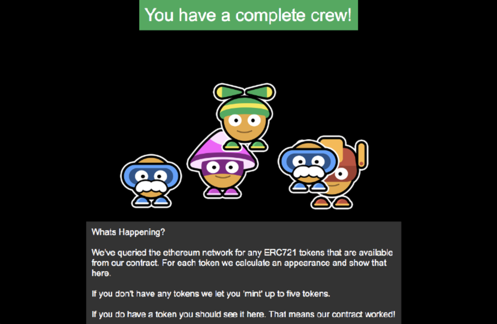

Examples
These examples are a great way to quickly dive in and see how you can integrate Bitski into a dapp on the platforms we support. Both of these examples use the same contract and assets to demonstrate how you can use Bitski to build cross-platform dapps.
Web based Dapp

Visit our demo here View the code
Running the example
First, install the dependencies.
npm install
Next, you'll need to use Truffle to deploy the contracts on one of Bitski's supported networks (Kovan or Rinkeby).
Install a local Ethereum node (Parity, or Geth), and configure your truffle.js to point at it, and run:
truffle migrate
Once the contracts are deployed, you can run to start the development server. You can learn more about deploying contracts with truffle here.
npm run dev
Then browse to http://localhost:3000
iOS Dapp
Our demo dapp is not available on the App Store yet, but you can still easily run it yourself from Xcode.
Running the example
You'll need Xcode 9 and CocoaPods to build the example.
Start by installing the dependencies.
pod install
Then, simply open the workspace in Xcode and run the project.